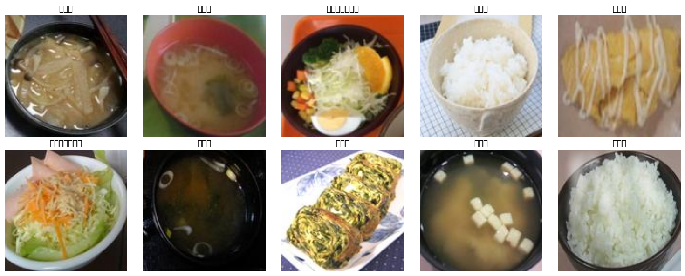
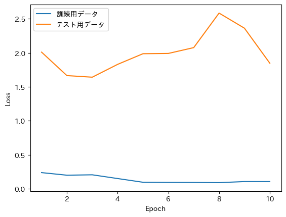
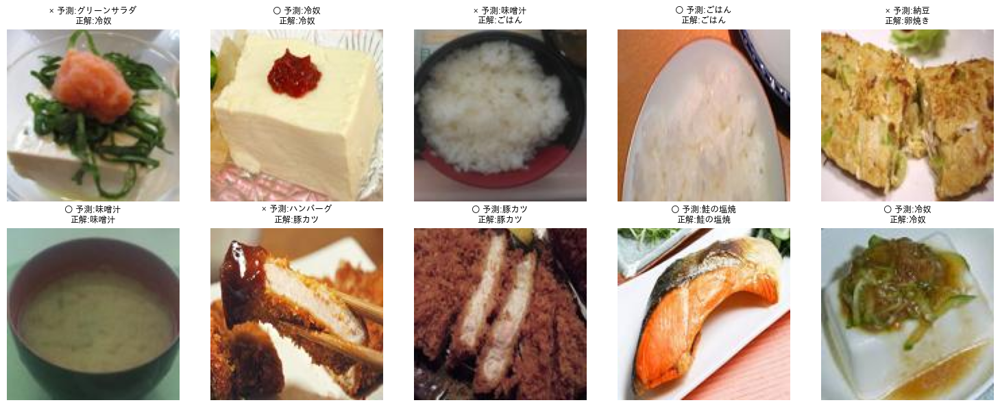
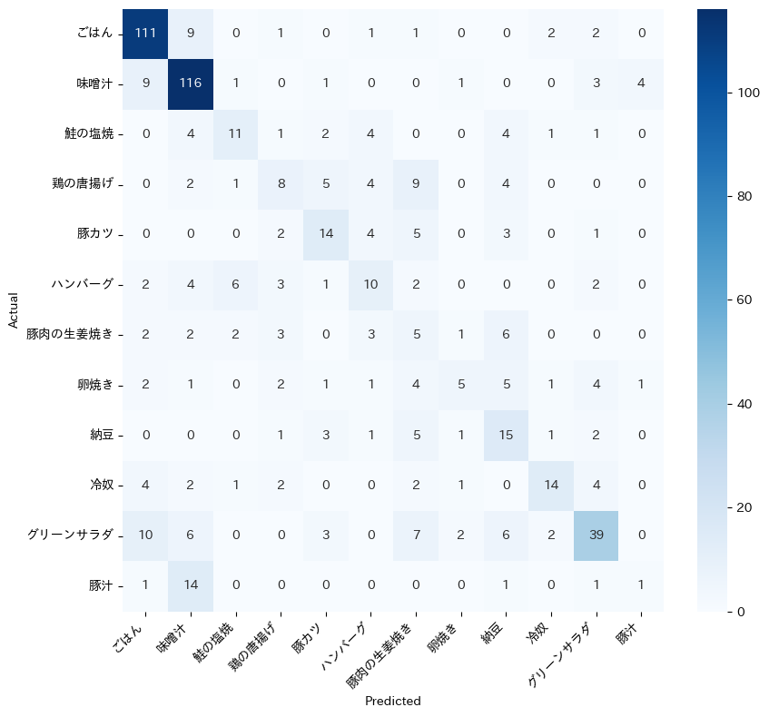

Code
import tensorflow as tf
gpus = tf.config.list_physical_devices('GPU')
print("GPU:", gpus)
if not gpus:
print("⚠️ GPUが無効です。ランタイムのタイプをGPUに変更してから、最初のセルから実行し直してください。")主食・主菜・副菜・汁物の12品目を対象に、CNNで食品画像の分類を行います。 MNIST・銀河画像分類の演習と同じ流れ(データ読み込み → モデル構築 → 学習 → 評価)で進めます。
事前に prepare_uecfood_classification_data.py を実行し、images/, train.csv, test.csv, class_map.csv を Google Drive にアップロードしておいてください。
この演習は画像を多数扱うため、GPUランタイムでないとかなり時間がかかります。下のセルを実行し、GPUが表示されない場合は「ランタイム」→「ランタイムのタイプを変更」でハードウェアアクセラレータを GPU (T4など) に変更してから、最初のセルからやり直してください。
トラブルシューティング：途中でエラーが出て変数が見つからない(NameError)場合、多くはランタイムが再起動されて変数が消えたことが原因です。その場合は「ランタイム」→「すべてのセルを実行」で最初からやり直してください。
| file_name | label | label_name | |
|---|---|---|---|
| 0 | 36_15803_0.jpg | 1 | 味噌汁 |
| 1 | 36_15154_0.jpg | 1 | 味噌汁 |
| 2 | 87_14990_0.jpg | 10 | グリーンサラダ |
| 3 | 1_31_0.jpg | 0 | ごはん |
| 4 | 67_14711_0.jpg | 7 | 卵焼き |
| ... | ... | ... | ... |
| 2336 | 36_13840_0.jpg | 1 | 味噌汁 |
| 2337 | 36_14764_0.jpg | 1 | 味噌汁 |
| 2338 | 1_5073_0.jpg | 0 | ごはん |
| 2339 | 1_14834_0.jpg | 0 | ごはん |
| 2340 | 87_13829_0.jpg | 10 | グリーンサラダ |
2341 rows × 3 columns
from keras.preprocessing.image import load_img, img_to_array
import numpy as np
def load_images(df):
images = []
labels = []
for _, row in df.iterrows():
fname = dir_path + 'images/' + row['file_name']
img = load_img(fname)
img = img_to_array(img)
images.append(img)
labels.append(row['label'])
return np.array(images), np.array(labels)
x_train, y_train = load_images(df_train)
x_test, y_test = load_images(df_test)import matplotlib.pyplot as plt
class_names = dict(zip(df_class_map['label'], df_class_map['label_name']))
fig, axes = plt.subplots(2, 5, figsize=(15, 6))
for i, ax in enumerate(axes.flat):
ax.imshow(x_train[i].astype('uint8'))
ax.set_title(class_names[y_train[i]])
ax.axis('off')
plt.tight_layout()
plt.show()/tmp/ipykernel_461/4040841419.py:10: UserWarning: Glyph 21619 (\N{CJK UNIFIED IDEOGRAPH-5473}) missing from font(s) DejaVu Sans.
plt.tight_layout()
/tmp/ipykernel_461/4040841419.py:10: UserWarning: Glyph 22092 (\N{CJK UNIFIED IDEOGRAPH-564C}) missing from font(s) DejaVu Sans.
plt.tight_layout()
/tmp/ipykernel_461/4040841419.py:10: UserWarning: Glyph 27713 (\N{CJK UNIFIED IDEOGRAPH-6C41}) missing from font(s) DejaVu Sans.
plt.tight_layout()
/tmp/ipykernel_461/4040841419.py:10: UserWarning: Glyph 12464 (\N{KATAKANA LETTER GU}) missing from font(s) DejaVu Sans.
plt.tight_layout()
/tmp/ipykernel_461/4040841419.py:10: UserWarning: Glyph 12522 (\N{KATAKANA LETTER RI}) missing from font(s) DejaVu Sans.
plt.tight_layout()
/tmp/ipykernel_461/4040841419.py:10: UserWarning: Glyph 12540 (\N{KATAKANA-HIRAGANA PROLONGED SOUND MARK}) missing from font(s) DejaVu Sans.
plt.tight_layout()
/tmp/ipykernel_461/4040841419.py:10: UserWarning: Glyph 12531 (\N{KATAKANA LETTER N}) missing from font(s) DejaVu Sans.
plt.tight_layout()
/tmp/ipykernel_461/4040841419.py:10: UserWarning: Glyph 12469 (\N{KATAKANA LETTER SA}) missing from font(s) DejaVu Sans.
plt.tight_layout()
/tmp/ipykernel_461/4040841419.py:10: UserWarning: Glyph 12521 (\N{KATAKANA LETTER RA}) missing from font(s) DejaVu Sans.
plt.tight_layout()
/tmp/ipykernel_461/4040841419.py:10: UserWarning: Glyph 12480 (\N{KATAKANA LETTER DA}) missing from font(s) DejaVu Sans.
plt.tight_layout()
/tmp/ipykernel_461/4040841419.py:10: UserWarning: Glyph 12372 (\N{HIRAGANA LETTER GO}) missing from font(s) DejaVu Sans.
plt.tight_layout()
/tmp/ipykernel_461/4040841419.py:10: UserWarning: Glyph 12399 (\N{HIRAGANA LETTER HA}) missing from font(s) DejaVu Sans.
plt.tight_layout()
/tmp/ipykernel_461/4040841419.py:10: UserWarning: Glyph 12435 (\N{HIRAGANA LETTER N}) missing from font(s) DejaVu Sans.
plt.tight_layout()
/tmp/ipykernel_461/4040841419.py:10: UserWarning: Glyph 21365 (\N{CJK UNIFIED IDEOGRAPH-5375}) missing from font(s) DejaVu Sans.
plt.tight_layout()
/tmp/ipykernel_461/4040841419.py:10: UserWarning: Glyph 28988 (\N{CJK UNIFIED IDEOGRAPH-713C}) missing from font(s) DejaVu Sans.
plt.tight_layout()
/tmp/ipykernel_461/4040841419.py:10: UserWarning: Glyph 12365 (\N{HIRAGANA LETTER KI}) missing from font(s) DejaVu Sans.
plt.tight_layout()
/usr/local/lib/python3.12/dist-packages/keras/src/layers/convolutional/base_conv.py:113: UserWarning: Do not pass an `input_shape`/`input_dim` argument to a layer. When using Sequential models, prefer using an `Input(shape)` object as the first layer in the model instead.
super().__init__(activity_regularizer=activity_regularizer, **kwargs)Model: "sequential"
┏━━━━━━━━━━━━━━━━━━━━━━━━━━━━━━━━━┳━━━━━━━━━━━━━━━━━━━━━━━━┳━━━━━━━━━━━━━━━┓ ┃ Layer (type) ┃ Output Shape ┃ Param # ┃ ┡━━━━━━━━━━━━━━━━━━━━━━━━━━━━━━━━━╇━━━━━━━━━━━━━━━━━━━━━━━━╇━━━━━━━━━━━━━━━┩ │ conv2d (Conv2D) │ (None, 126, 126, 32) │ 896 │ ├─────────────────────────────────┼────────────────────────┼───────────────┤ │ conv2d_1 (Conv2D) │ (None, 124, 124, 64) │ 18,496 │ ├─────────────────────────────────┼────────────────────────┼───────────────┤ │ max_pooling2d (MaxPooling2D) │ (None, 62, 62, 64) │ 0 │ ├─────────────────────────────────┼────────────────────────┼───────────────┤ │ conv2d_2 (Conv2D) │ (None, 60, 60, 32) │ 18,464 │ ├─────────────────────────────────┼────────────────────────┼───────────────┤ │ conv2d_3 (Conv2D) │ (None, 58, 58, 64) │ 18,496 │ ├─────────────────────────────────┼────────────────────────┼───────────────┤ │ max_pooling2d_1 (MaxPooling2D) │ (None, 29, 29, 64) │ 0 │ ├─────────────────────────────────┼────────────────────────┼───────────────┤ │ dropout (Dropout) │ (None, 29, 29, 64) │ 0 │ ├─────────────────────────────────┼────────────────────────┼───────────────┤ │ flatten (Flatten) │ (None, 53824) │ 0 │ ├─────────────────────────────────┼────────────────────────┼───────────────┤ │ dense (Dense) │ (None, 128) │ 6,889,600 │ ├─────────────────────────────────┼────────────────────────┼───────────────┤ │ dropout_1 (Dropout) │ (None, 128) │ 0 │ ├─────────────────────────────────┼────────────────────────┼───────────────┤ │ dense_1 (Dense) │ (None, 12) │ 1,548 │ └─────────────────────────────────┴────────────────────────┴───────────────┘
Total params: 6,947,500 (26.50 MB)
Trainable params: 6,947,500 (26.50 MB)
Non-trainable params: 0 (0.00 B)
Epoch 1/10 74/74 ━━━━━━━━━━━━━━━━━━━━ 232s 3s/step - accuracy: 0.9265 - loss: 0.2381 - val_accuracy: 0.6051 - val_loss: 2.0110 Epoch 2/10 74/74 ━━━━━━━━━━━━━━━━━━━━ 233s 3s/step - accuracy: 0.9368 - loss: 0.2001 - val_accuracy: 0.5983 - val_loss: 1.6657 Epoch 3/10 74/74 ━━━━━━━━━━━━━━━━━━━━ 232s 3s/step - accuracy: 0.9381 - loss: 0.2059 - val_accuracy: 0.5915 - val_loss: 1.6422 Epoch 4/10 74/74 ━━━━━━━━━━━━━━━━━━━━ 265s 3s/step - accuracy: 0.9569 - loss: 0.1509 - val_accuracy: 0.6051 - val_loss: 1.8309 Epoch 5/10 74/74 ━━━━━━━━━━━━━━━━━━━━ 260s 3s/step - accuracy: 0.9705 - loss: 0.0962 - val_accuracy: 0.6051 - val_loss: 1.9877 Epoch 6/10 74/74 ━━━━━━━━━━━━━━━━━━━━ 231s 3s/step - accuracy: 0.9722 - loss: 0.0939 - val_accuracy: 0.6085 - val_loss: 1.9917 Epoch 7/10 74/74 ━━━━━━━━━━━━━━━━━━━━ 264s 3s/step - accuracy: 0.9688 - loss: 0.0931 - val_accuracy: 0.6137 - val_loss: 2.0773 Epoch 8/10 74/74 ━━━━━━━━━━━━━━━━━━━━ 233s 3s/step - accuracy: 0.9701 - loss: 0.0904 - val_accuracy: 0.6051 - val_loss: 2.5855 Epoch 9/10 74/74 ━━━━━━━━━━━━━━━━━━━━ 263s 3s/step - accuracy: 0.9710 - loss: 0.1063 - val_accuracy: 0.5983 - val_loss: 2.3633 Epoch 10/10 74/74 ━━━━━━━━━━━━━━━━━━━━ 229s 3s/step - accuracy: 0.9688 - loss: 0.1059 - val_accuracy: 0.5966 - val_loss: 1.8484
━━━━━━━━━━━━━━━━━━━━━━━━━━━━━━━━━━━━━━━━ 0.0/4.1 MB ? eta -:--:-- ━━━━━━━━━━━━━━━━━━━━━━━━━━━━━━━━━━━╸━━━━ 3.7/4.1 MB 112.0 MB/s eta 0:00:01 ━━━━━━━━━━━━━━━━━━━━━━━━━━━━━━━━━━━━━━━╸ 4.1/4.1 MB 102.2 MB/s eta 0:00:01 ━━━━━━━━━━━━━━━━━━━━━━━━━━━━━━━━━━━━━━━━ 4.1/4.1 MB 52.8 MB/s eta 0:00:00 Preparing metadata (setup.py) ... done Building wheel for japanize-matplotlib (setup.py) ... done

19/19 ━━━━━━━━━━━━━━━━━━━━ 15s 792ms/step
# テスト画像といくつかの予測結果を表示
fig, axes = plt.subplots(2, 5, figsize=(15, 6))
for i, ax in enumerate(axes.flat):
ax.imshow(x_test[i].astype('uint8'))
correct = "○" if y_pred_label[i] == y_test[i] else "×"
ax.set_title(f"{correct} 予測:{class_names[y_pred_label[i]]}\n正解:{class_names[y_test[i]]}", fontsize=9)
ax.axis('off')
plt.tight_layout()
plt.show()
from sklearn.metrics import confusion_matrix
import seaborn as sns
cm = confusion_matrix(y_test, y_pred_label)
label_names = [class_names[i] for i in range(num_classes)]
fig, ax = plt.subplots(figsize=(9, 8))
sns.heatmap(cm, annot=True, fmt='d', cmap='Blues',
xticklabels=label_names, yticklabels=label_names, ax=ax)
ax.set_xlabel('Predicted')
ax.set_ylabel('Actual')
plt.xticks(rotation=45, ha='right')
plt.tight_layout()
plt.show()
ここまでで「実行→解釈」は一通り終わりました。ここからは、実際に精度を上げられるか試す時間です。 効果が大きい順に、2つのやり方を用意しています。両方試して、混同行列がどう変わるか比べてみましょう。
実行前に予想してみましょう：11章の混同行列では、味噌汁と豚汁が頻繁に混同されていました。データ拡張・class_weight・転移学習を加えると、この混同は直ると思いますか？それとも、データ量を増やしても解決しない種類の混同だと思いますか？実行後、自分の予想と結果を比べてみてください。
from tensorflow.keras.layers import RandomFlip, RandomRotation, RandomZoom
from tensorflow.keras.callbacks import EarlyStopping
from sklearn.utils.class_weight import compute_class_weight
import numpy as np
# データ拡張: 回転・反転・拡大でデータのバリエーションを増やす
data_augmentation = Sequential([
RandomFlip("horizontal"),
RandomRotation(0.1),
RandomZoom(0.1),
])
# EarlyStopping: val_lossの改善が止まったら自動で学習を打ち切る
early_stop = EarlyStopping(monitor='val_loss', patience=3, restore_best_weights=True)
# class_weight: 件数の少ないクラス(生姜焼きなど)を軽視しないようにする
class_weights_array = compute_class_weight(
'balanced', classes=np.unique(y_train), y=y_train
)
class_weight_dict = dict(enumerate(class_weights_array))
print("クラスごとの重み:", class_weight_dict)クラスごとの重み: {0: np.float64(0.3909485637942552), 1: np.float64(0.32732102908277405), 2: np.float64(2.2168560606060606), 3: np.float64(1.612258953168044), 4: np.float64(1.7575075075075075), 5: np.float64(1.8404088050314464), 6: np.float64(2.097670250896057), 7: np.float64(1.8758012820512822), 8: np.float64(1.6532485875706215), 9: np.float64(1.5122739018087856), 10: np.float64(0.7093939393939394), 11: np.float64(1.9315181518151816)}# 同じCNN構造に、データ拡張層だけ追加して作り直す
model_v2 = Sequential([
data_augmentation,
Conv2D(filters=32, kernel_size=(3, 3), activation='relu', input_shape=(128, 128, 3)),
Conv2D(filters=64, kernel_size=(3, 3), activation='relu'),
MaxPooling2D(pool_size=(2, 2)),
Conv2D(filters=32, kernel_size=(3, 3), activation='relu'),
Conv2D(filters=64, kernel_size=(3, 3), activation='relu'),
MaxPooling2D(pool_size=(2, 2)),
Dropout(0.25),
Flatten(),
Dense(units=128, activation='relu'),
Dropout(0.25),
Dense(units=num_classes, activation='softmax'),
])
model_v2.compile(optimizer='adam', loss='categorical_crossentropy', metrics=['accuracy'])
EPOCHS_V2 = 20 # ここを変えて再実行してみるのもOK
results_v2 = model_v2.fit(
x_train, y_train_cat,
epochs=EPOCHS_V2,
validation_data=(x_test, y_test_cat),
class_weight=class_weight_dict,
callbacks=[early_stop],
)/usr/local/lib/python3.12/dist-packages/keras/src/layers/convolutional/base_conv.py:113: UserWarning: Do not pass an `input_shape`/`input_dim` argument to a layer. When using Sequential models, prefer using an `Input(shape)` object as the first layer in the model instead.
super().__init__(activity_regularizer=activity_regularizer, **kwargs)Epoch 1/20 74/74 ━━━━━━━━━━━━━━━━━━━━ 240s 3s/step - accuracy: 0.1781 - loss: 10.7042 - val_accuracy: 0.2581 - val_loss: 2.2059 Epoch 2/20 74/74 ━━━━━━━━━━━━━━━━━━━━ 264s 3s/step - accuracy: 0.1581 - loss: 2.4448 - val_accuracy: 0.3179 - val_loss: 2.0776 Epoch 3/20 74/74 ━━━━━━━━━━━━━━━━━━━━ 262s 3s/step - accuracy: 0.0701 - loss: 2.4842 - val_accuracy: 0.0872 - val_loss: 2.4767 Epoch 4/20 74/74 ━━━━━━━━━━━━━━━━━━━━ 261s 3s/step - accuracy: 0.0624 - loss: 2.4860 - val_accuracy: 0.0564 - val_loss: 2.4948 Epoch 5/20 74/74 ━━━━━━━━━━━━━━━━━━━━ 262s 3s/step - accuracy: 0.0525 - loss: 2.4852 - val_accuracy: 0.0564 - val_loss: 2.4943
from tensorflow.keras.applications import MobileNetV2
from tensorflow.keras.layers import GlobalAveragePooling2D
# ImageNetで事前学習済みのMobileNetV2を土台にする
base_model = MobileNetV2(input_shape=(128, 128, 3), include_top=False, weights='imagenet')
base_model.trainable = False # 事前学習済み部分は固定し、新しく追加する層だけ学習する
model_transfer = Sequential([
data_augmentation,
base_model,
GlobalAveragePooling2D(),
Dense(128, activation='relu'),
Dropout(0.4),
Dense(num_classes, activation='softmax'),
])
model_transfer.compile(optimizer='adam', loss='categorical_crossentropy', metrics=['accuracy'])
results_transfer = model_transfer.fit(
x_train, y_train_cat,
epochs=EPOCHS_V2,
validation_data=(x_test, y_test_cat),
class_weight=class_weight_dict,
callbacks=[early_stop],
)Downloading data from https://storage.googleapis.com/tensorflow/keras-applications/mobilenet_v2/mobilenet_v2_weights_tf_dim_ordering_tf_kernels_1.0_128_no_top.h5 9406464/9406464 ━━━━━━━━━━━━━━━━━━━━ 0s 0us/step Epoch 1/20 74/74 ━━━━━━━━━━━━━━━━━━━━ 53s 641ms/step - accuracy: 0.1995 - loss: 2.4242 - val_accuracy: 0.2974 - val_loss: 2.0926 Epoch 2/20 74/74 ━━━━━━━━━━━━━━━━━━━━ 46s 623ms/step - accuracy: 0.2930 - loss: 2.1891 - val_accuracy: 0.3402 - val_loss: 1.9310 Epoch 3/20 74/74 ━━━━━━━━━━━━━━━━━━━━ 49s 662ms/step - accuracy: 0.3242 - loss: 2.0828 - val_accuracy: 0.3795 - val_loss: 1.8034 Epoch 4/20 74/74 ━━━━━━━━━━━━━━━━━━━━ 79s 627ms/step - accuracy: 0.3516 - loss: 2.0175 - val_accuracy: 0.4034 - val_loss: 1.7429 Epoch 5/20 74/74 ━━━━━━━━━━━━━━━━━━━━ 48s 650ms/step - accuracy: 0.3592 - loss: 1.9841 - val_accuracy: 0.4359 - val_loss: 1.6912 Epoch 6/20 74/74 ━━━━━━━━━━━━━━━━━━━━ 84s 667ms/step - accuracy: 0.3733 - loss: 1.9184 - val_accuracy: 0.4410 - val_loss: 1.6211 Epoch 7/20 74/74 ━━━━━━━━━━━━━━━━━━━━ 48s 645ms/step - accuracy: 0.3789 - loss: 1.8538 - val_accuracy: 0.3983 - val_loss: 1.6782 Epoch 8/20 74/74 ━━━━━━━━━━━━━━━━━━━━ 46s 624ms/step - accuracy: 0.3789 - loss: 1.8587 - val_accuracy: 0.3915 - val_loss: 1.6112 Epoch 9/20 74/74 ━━━━━━━━━━━━━━━━━━━━ 85s 659ms/step - accuracy: 0.3938 - loss: 1.8544 - val_accuracy: 0.4393 - val_loss: 1.6279 Epoch 10/20 74/74 ━━━━━━━━━━━━━━━━━━━━ 46s 625ms/step - accuracy: 0.3985 - loss: 1.8340 - val_accuracy: 0.4462 - val_loss: 1.5562 Epoch 11/20 74/74 ━━━━━━━━━━━━━━━━━━━━ 86s 673ms/step - accuracy: 0.4126 - loss: 1.8016 - val_accuracy: 0.4034 - val_loss: 1.6140 Epoch 12/20 32/74 ━━━━━━━━━━━━━━━━━━━━ 22s 531ms/step - accuracy: 0.3982 - loss: 1.7655
--------------------------------------------------------------------------- KeyboardInterrupt Traceback (most recent call last) /tmp/ipykernel_461/3855668829.py in <cell line: 0>() 17 model_transfer.compile(optimizer='adam', loss='categorical_crossentropy', metrics=['accuracy']) 18 ---> 19 results_transfer = model_transfer.fit( 20 x_train, y_train_cat, 21 epochs=EPOCHS_V2, /usr/local/lib/python3.12/dist-packages/keras/src/utils/traceback_utils.py in error_handler(*args, **kwargs) 115 filtered_tb = None 116 try: --> 117 return fn(*args, **kwargs) 118 except Exception as e: 119 filtered_tb = _process_traceback_frames(e.__traceback__) /usr/local/lib/python3.12/dist-packages/keras/src/backend/tensorflow/trainer.py in fit(self, x, y, batch_size, epochs, verbose, callbacks, validation_split, validation_data, shuffle, class_weight, sample_weight, initial_epoch, steps_per_epoch, validation_steps, validation_batch_size, validation_freq) 397 for begin_step, end_step, iterator in epoch_iterator: 398 callbacks.on_train_batch_begin(begin_step) --> 399 logs = self.train_function(iterator) 400 callbacks.on_train_batch_end(end_step, logs) 401 if self.stop_training: /usr/local/lib/python3.12/dist-packages/keras/src/backend/tensorflow/trainer.py in function(iterator) 239 iterator, (tf.data.Iterator, tf.distribute.DistributedIterator) 240 ): --> 241 opt_outputs = multi_step_on_iterator(iterator) 242 if not opt_outputs.has_value(): 243 raise StopIteration /usr/local/lib/python3.12/dist-packages/tensorflow/python/util/traceback_utils.py in error_handler(*args, **kwargs) 148 filtered_tb = None 149 try: --> 150 return fn(*args, **kwargs) 151 except Exception as e: 152 filtered_tb = _process_traceback_frames(e.__traceback__) /usr/local/lib/python3.12/dist-packages/tensorflow/python/eager/polymorphic_function/polymorphic_function.py in __call__(self, *args, **kwds) 831 832 with OptionalXlaContext(self._jit_compile): --> 833 result = self._call(*args, **kwds) 834 835 new_tracing_count = self.experimental_get_tracing_count() /usr/local/lib/python3.12/dist-packages/tensorflow/python/eager/polymorphic_function/polymorphic_function.py in _call(self, *args, **kwds) 876 # In this case we have not created variables on the first call. So we can 877 # run the first trace but we should fail if variables are created. --> 878 results = tracing_compilation.call_function( 879 args, kwds, self._variable_creation_config 880 ) /usr/local/lib/python3.12/dist-packages/tensorflow/python/eager/polymorphic_function/tracing_compilation.py in call_function(args, kwargs, tracing_options) 137 bound_args = function.function_type.bind(*args, **kwargs) 138 flat_inputs = function.function_type.unpack_inputs(bound_args) --> 139 return function._call_flat( # pylint: disable=protected-access 140 flat_inputs, captured_inputs=function.captured_inputs 141 ) /usr/local/lib/python3.12/dist-packages/tensorflow/python/eager/polymorphic_function/concrete_function.py in _call_flat(self, tensor_inputs, captured_inputs) 1320 and executing_eagerly): 1321 # No tape is watching; skip to running the function. -> 1322 return self._inference_function.call_preflattened(args) 1323 forward_backward = self._select_forward_and_backward_functions( 1324 args, /usr/local/lib/python3.12/dist-packages/tensorflow/python/eager/polymorphic_function/atomic_function.py in call_preflattened(self, args) 214 def call_preflattened(self, args: Sequence[core.Tensor]) -> Any: 215 """Calls with flattened tensor inputs and returns the structured output.""" --> 216 flat_outputs = self.call_flat(*args) 217 return self.function_type.pack_output(flat_outputs) 218 /usr/local/lib/python3.12/dist-packages/tensorflow/python/eager/polymorphic_function/atomic_function.py in call_flat(self, *args) 249 with record.stop_recording(): 250 if self._bound_context.executing_eagerly(): --> 251 outputs = self._bound_context.call_function( 252 self.name, 253 list(args), /usr/local/lib/python3.12/dist-packages/tensorflow/python/eager/context.py in call_function(self, name, tensor_inputs, num_outputs) 1686 cancellation_context = cancellation.context() 1687 if cancellation_context is None: -> 1688 outputs = execute.execute( 1689 name.decode("utf-8"), 1690 num_outputs=num_outputs, /usr/local/lib/python3.12/dist-packages/tensorflow/python/eager/execute.py in quick_execute(op_name, num_outputs, inputs, attrs, ctx, name) 51 try: 52 ctx.ensure_initialized() ---> 53 tensors = pywrap_tfe.TFE_Py_Execute(ctx._handle, device_name, op_name, 54 inputs, attrs, num_outputs) 55 except core._NotOkStatusException as e: KeyboardInterrupt:
def show_confusion_matrix(trained_model, title):
y_pred = trained_model.predict(x_test)
y_pred_label = np.argmax(y_pred, axis=1)
cm = confusion_matrix(y_test, y_pred_label)
label_names = [class_names[i] for i in range(num_classes)]
fig, ax = plt.subplots(figsize=(9, 8))
sns.heatmap(cm, annot=True, fmt='d', cmap='Blues',
xticklabels=label_names, yticklabels=label_names, ax=ax)
ax.set_xlabel('Predicted')
ax.set_ylabel('Actual')
ax.set_title(title)
plt.xticks(rotation=45, ha='right')
plt.tight_layout()
plt.show()
# 元のモデル・改善版(12-1)・転移学習版(12-2)を並べて見比べる
show_confusion_matrix(model, "オリジナル")
show_confusion_matrix(model_v2, "データ拡張+EarlyStopping+class_weight")
show_confusion_matrix(model_transfer, "転移学習(MobileNetV2)")